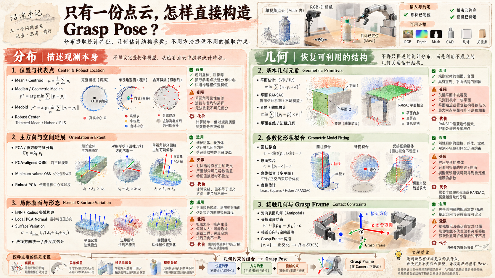
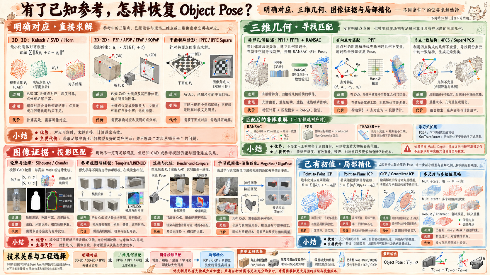

“知道怎么抓”，
还不等于知道夹爪该去哪。
这一站，我想弄清楚一件事：当物体的抓取方式已经能够提前约定，怎样从相机的观测中确定夹爪应该到达的位置和方向，并最终让机器人真正执行？
比如一个规则盒体，我可以约定夹住它的一对侧面；一个已知的瓶子，也可以规定抓取瓶身某个高度，并约束夹爪的方向。
这些约定描述了我希望夹爪与物体建立怎样的关系，却没有告诉我，这个关系在今天的场景里对应什么姿态。
最开始觉得，事情似乎并不复杂：找到物体，算出位置和方向，再把 Pose 交给机器人就好。后来才发现，相机究竟测量到了什么、姿态凭什么能求出、机器人的 TCP 又该去哪里，每一步都有需要认真确认的条件。
先不研究如何面对任意物体自由寻找抓法；这里的重点，是把已经可以约定的那一次抓取，真正算清楚。
走过一圈，原来整件事是这样的。
最初只想找位置和方向。现在再看，从相机观测到真实夹爪，中间其实有几段不同的工作。先把结论摆在这里，后面再回到最早的想法。
目标区域 · 相机模型
Grasp Frame · TCP
知道想怎么抓，还需要观测或先验支持。
显式几何、参考关系和学习预测，各有条件与代价。
坐标、工具关系和基本执行条件仍要对上。
这些认识并不是一开始就知道的。接下来还是从最初那个有点朴素的念头开始：假设我已经拿到目标点云，能不能直接从几何里把抓取姿态算出来？
起初，我只是想找个中心和方向。
这里不打算在一页里讲完所有技术。每走到一个新的问题，先记下为什么会想到它；真正值得细挖的方法，放在下一层笔记里慢慢看。
先从几何算算看
既然抓法已经定好了，那就先试试最直接的办法。
假设现在有一份目标点云，我想抓住一个盒子的两侧。那首先得知道盒子在哪里吧？把点的 XYZ 求个平均，不就有一个中心了吗？
至于方向，盒子本身有棱有边，应该也能从形状里找出来。再配上提前约定的夹爪姿态，似乎就能凑出一个 Grasp Pose。至少在最开始，我觉得这事应该没那么复杂。
但稍微往下想，又觉得有些地方不太对劲。比如相机只拍到盒子的一面，求出来的中心还算中心吗？如果换成圆柱形瓶子，又该怎么找方向？甚至“抓两侧”到底需要知道哪些几何信息，我好像也没想得特别清楚。
既然如此，就从最简单的中心和方向开始，看看一份点云到底能帮我做到哪一步。

如果我原本就知道它长什么样呢？
沿着几何这条路研究了一阵子，慢慢发现，从眼前的点云里找中心、方向和表面，确实能做不少事情。但相机能看到的东西有时候实在有限，想从这一小部分观测里还原自己需要的关系，也没那么容易。
这时候忽然想到：如果这个物体本来就是我认识的，为什么每次都要从头算呢？
比如一个固定型号的盒子，我可能早就知道它的长宽高；一只已知的瓶子，甚至可以提前规定好夹爪相对于瓶身应该摆在哪里。
那能不能先在参考物体上把抓法定好，真正看到它时，只需要找到它现在的位置和朝向，再把那份关系搬过来？
听起来似乎省事了不少。不过又冒出一个问题：眼前这个物体，和事先保存的参考，到底怎么对应上？ 它可能转了个角度，也可能只露出一部分。如果我只有尺寸、几个点或者一张参考图，又能确定多少？
于是，我开始试试另一条路：先找回物体和已知参考之间的关系，再得到约定的抓取姿态。具体怎么找、哪些情况下能找到，留给下一篇慢慢研究。

等等，我手里的点云是从哪里来的？
前面折腾了半天几何和已知参考，慢慢觉得已经有不少办法可以算 Pose 了。但回头一想，似乎一直偷偷省略了一件事：我好像默认相机已经把需要的东西准备好了。
比如桌上放着三个瓶子，我想抓左边那个。之前讨论几何，总是假设已经拿到它的点云；讨论参考，也默认能找到眼前物体和参考的对应关系。
可真实相机给我的，首先是图像和深度数据。那要怎么知道哪一个才是目标？图像里的位置怎么变成三维？一个像素加上深度，又凭什么能对应到一个空间位置？
而且，相机看见了，也不代表它真的测量到了。透明瓶子在 RGB 里看得很清楚，Depth 却可能缺了一大片；图像和深度没对齐，也可能把点取到背景上。
这才发现，之前那句轻描淡写的“假设已经拿到目标点云”，其实藏了不少需要认真弄懂的事。于是决定回头认识相机，再看看怎么把二维目标和三维观测真正联系起来。
同一个目标：RGB 找到了它，Depth 却可能缺失、错位或落到背景上。
这些关系，一定要自己一步步算吗？
研究了一圈，发现不管是从点云里找几何关系，还是借助已知参考恢复物体姿态，好像都在做一件事：想办法从观测中找到依据，再把 Pose 算出来。
但忽然想到，现在模型已经可以预测目标、关键点和各种几何信息了，那它能不能更进一步，直接帮我估计姿态？
比如一个固定型号的盒子，如果有不同位置、不同朝向的图像和对应姿态，能不能让模型看到它，就知道现在的 Pose？甚至再大胆一点：既然最终想要的是 Grasp Pose，为什么一定要先求 Object Pose 呢？
如果抓取关系本来就已经约定，似乎也可以让模型直接预测夹爪该去的位置和方向。
当然，省掉一些手工求解步骤，不代表问题真的凭空消失了。数据从哪里来？模型遇到遮挡或没见过的外观还可靠吗？它学到的到底是什么？
这便成了另一条值得探索的路：看看前人怎样用学习方法得到关键点、Object Pose，甚至约定好的 Grasp Pose。
待继续记录 · 学习式求解不手工构造所有关系，模型能直接学出 Pose 吗？留一个坑位好，Pose 算出来了，夹爪就知道该去哪了吗？
折腾了这么一圈，不管是几何、已知参考，还是学习式方法，总算有机会得到一个 Grasp Pose 了。那接下来是不是直接发给机械臂就能抓？
仔细一想，好像还差了点什么：我算出来的是相机眼里的位置，可机械臂并不是站在相机的坐标系里工作的。
比如相机装在机械臂末端，随着手臂一起移动。同一只桌上的瓶子，在相机坐标系下的位置会变，但它在机器人基座下并没有跟着跑。
那机械臂怎么知道，相机看到的位置究竟对应自己面前的哪里？这就需要弄清楚相机和机械臂之间的坐标关系，手眼标定和坐标变换也终于有了很实际的意义。
还有一个小问题：我可以把 Grasp Pose 定义在两个手指之间的夹持中心，可机器人实际控制的 TCP 未必在那里。就算相机 Pose 算对了，如果 Grasp Frame 和 TCP 没对上，夹爪依然会走偏。
而且位置转换正确，也不意味着一定抓得住。夹爪开度、接近方向和局部碰撞，这些基本条件至少得检查一下。
这一站暂时不打算把完整的运动规划和控制都研究完。先把一件事搞明白：视觉求出的姿态，怎样成为机器人真正理解的 TCP 目标？
采用 Eye-in-Hand 场景，表现相机、末端、机器人基座、Grasp Frame 和 TCP 的关系。
这一站，究竟弄明白了什么？
最初关心的是“用什么方法能算出 Pose”，现在更想先看清楚：这个 Pose 凭什么成立，又在什么情况下不值得相信？
哪些信息来自相机的真实观测，哪些依赖物体形状、已知参考或训练数据？抓法本身又约束了哪些自由度？
遮挡、深度缺失、对称歧义、错误参考、分布变化和标定偏差，究竟会影响哪一环？有结果不等于结果可靠。
直接几何可能更轻便，已知参考能够利用先验，学习式方法能减少部分手工设计；各有适用条件，也各有建模、数据和维护成本。
先知道自己依赖什么，才知道一条路能走多远。
对于抓取关系能够稳定约定的物体，这些思路已经有很大价值。若当前观测不足以可靠恢复它，可以继续补观测、补先验，也可以明确地报告失败，而不是勉强给出一个 Pose。